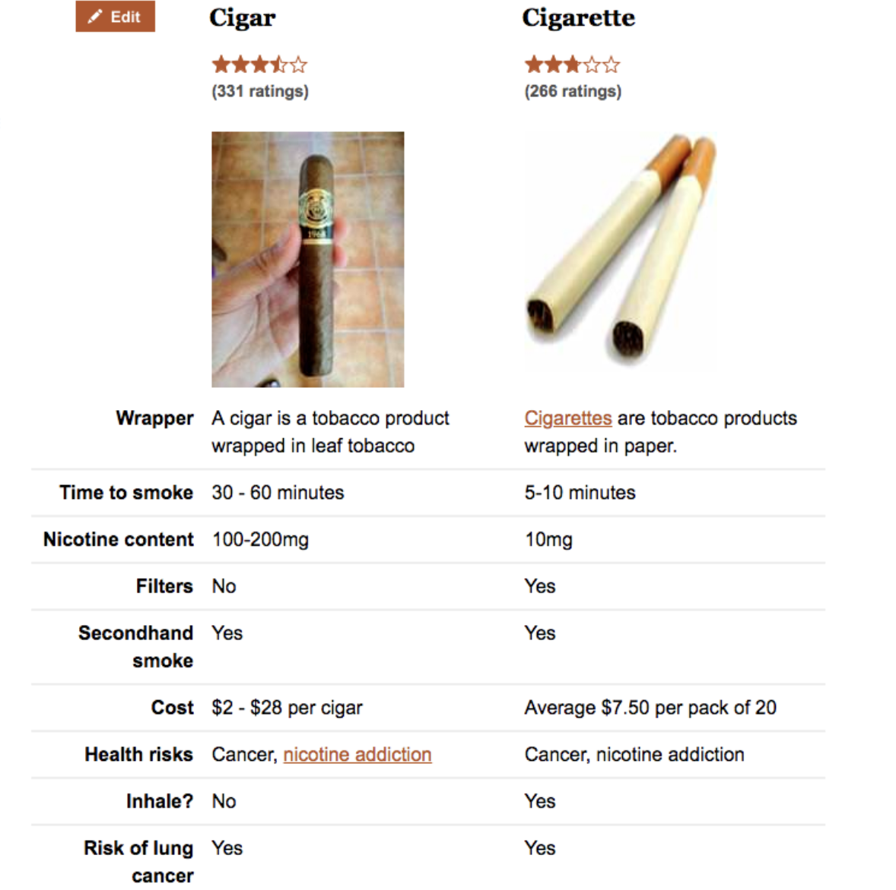
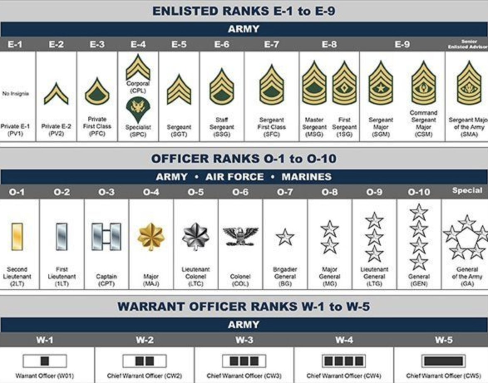
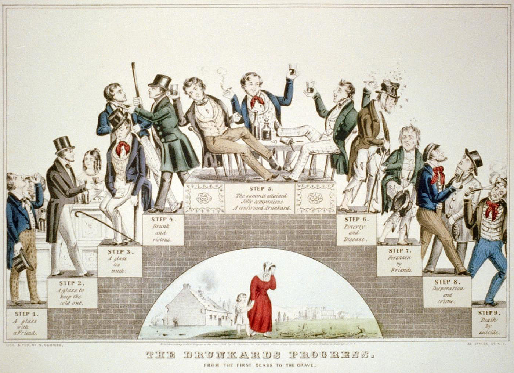

chapter23.1--handout
Background Information
Smoking room
吸烟室（smoking room）或吸烟休息室（smoking lounge）是为吸烟人士特别提供和装修的房间，一般位于禁止吸烟的建筑物内。在公共场所吸烟是特别不礼貌的行为，属于一种offensive behaviour，所以如果介意别人吸烟，可以说：Can you please go to the smoking room/ lounge/ area? 当然如果自己想吸烟的话，可以说：Do you mind if I smoke here? 或者干脆，Can you direct me to the smoking room?
cigar vs cigarette
雪茄（cigar）和香烟（cigarette），乍一看两个词的词根是一样的，他们之间的区别，今天用一张图专业地给你分析清楚～

另外还有同学可能记得一个词Tobacco，其实就是烟草的意思啦，cigarette中间地烟丝来源地那种植物。
Carl T. Langford
Carl T. Langford (July 23, 1918 – July 9, 2011)佛罗里达州奥兰多市的市长（Mayor of Orlando, Florida from 1967 to 1980），他曾是唯二的最早期被授予杰出勋章（ Distinguished Eagle Scout Award）的鹰级童子军（Eagle Scouts），由于他对当地的贡献，去世后奥兰多政府建立了Mayor Carl T. Langford Park，用来纪念他。
PS：还记得我们之前说的童子军吗？分不同的级别，鹰级童子军是最高的级别哦～
American rank system（美国军衔制度）

今天提到的Master Sergeant是军士长，是美国陆军当中的军衔，大体的陆军军衔分为以下等级：
💧General of the Army五星上将
General上将
Lieutenant General中将
Major General少将
Brigadier General准将
💧Colonel上校
Lieutenant Colonel中校
Major少校
💧Captain上尉
First Lieutenant中尉
Second Lieutenant少尉
Chief Warrant Officer一级准尉
Warrant Officer二级准尉
💧Master Sergeant军士长
Sergeant First Class上士
Sergeant中士
Corporal下士
💧Private First Class一等兵
Private二等兵
Basic Private三等兵
其中五星上将（General of the Army），是现有的最高军衔，正式设立于1944年12月，由美国国会批准。五星上将肩章上镶有五颗星徽，相当于西方其它国家的元帅军衔。五星上将的晋升基本条件，必须担任过盟军战区指挥官职务，历年获此殊荣者均和二次世界大战有关，包括马歇尔（马歇尔计划）和美国前总统艾森豪威尔（先后担任过欧洲战区指挥官）、麦克阿瑟（太平洋战区指挥官）及布莱德雷（地中海战区指挥官）。美国国会规定，该军衔只在战时授予，且终生不退役。
6星上将、特级上将（General of the Armies of the United States）曾是美军的最高军衔和第二军衔，现已不复存在，历史上仅授予乔治·华盛顿（George Washington，美国国父）一人，而作为原第三军衔的5星上将被保留下来成为现役美军名义上的最高军衔，只在战时授予。所以，实际上4星上将才是现役美军的最高军衔。
United States Army Reserve (USAR)
💧The United States Army Reserve (USAR) 美国陆军后备队是美国陆军的联邦储备军，和陆军国民守卫队（the Army National Guard）一起构成了美国陆军的预备役部队。国民警卫队是各州的地方部队，但美国总统有权征调并使其执行联邦任务；联邦后备队分别归各个军种领导，战时集体或单个编入现役部队。
Henry Ward Beecher
Henry Ward Beecher (June 24, 1813 – March 8, 1887) 美国公理会神职人员（Congregationalist clergyman）,社会改革家（social reformer）以及演说家，以他支持废奴而闻名（known for his support of the abolition of slavery），他同样支持社会改革的运动，比如美国妇女选举权（women's suffrage）的争取，以及禁酒运动（temperance）；他还是达尔文进化论的提倡者（He also championed Charles Darwin's theory of evolution），声称进化论和基督信仰并不冲突。

Vocabulary
huddle
💧做名词地时候表示这样地意思：
a disorganized and densely packed crowd
n. 拥挤；混乱；杂乱一团
a huddle of frightened women
💧动词化的话呢也类似：
vt.crowd or draw together
把...挤在一起；使缩成一团；草率了事
she huddled up close to him.
她紧紧偎依着他。
admonish
💧admonish or counsel in terms of someone's behavior
vt. 劝告, 训诫，(温和地)责备，轻责
He also admonishes me that I should work harder and harder, otherwise I will regret one day.
他还教导我要努力学习，否则将来后悔。
conscientious
💧careful, moral
adj. 认真的, 勤奋的，道德的
a conscientious worker
勤勤恳恳的工作者
💧还记得梅尔吉布森以导演身份重回好莱坞的力作《血战钢锯岭》（Hacksaw Ridge）中戴斯蒙德·道斯（Desmond Doss）坚持要服兵役，但是拒绝碰枪的情节吗？当时长官说we got a C.O. here，就是这个词：
💧conscientious objector ([缩]C. O.)
由于道德或宗教原因而拒绝服兵役的人
strew
💧spread by scattering
vt. 散播；撒满
💧strew toys all over the carpet
玩具扔得一地毯都是
💧strewing flowers down the aisle.
沿街撒花朵
antagonize
💧annoy, rag, get to, bother, get at, irritate, rile
vt. 使成为敌人；引起…敌对〔对抗〕
对...起反作用;中和
a personality that antagonizes almost immediately
一个几乎一见就令人起反感的性格
💧In the choice between appeasing the Russian public and antagonizing the West, it appears Vladimir Putin has no good options.
在权衡安抚俄罗斯民众和挑衅西方国家之间，看来弗拉迪米尔·普京也没有什么好办法。
meticulous
💧precise
adj. 极仔细的; 一丝不苟的
careful and meticulous calculation
精打细算
💧She is meticulous in her presentation of facts.
她介绍事实十分详细。
Crush Your Problems
- Immediately above their heads was a sign that said "No Smoking."
💧看出倒装了吗？哈哈，没看出来也无所谓，能看懂就好。当然我们还是可以学习套用一下这个句式的吼～
💧还记得之前我们说过，倒装一般的目的就是为了强调，这句话也是这样，“就在他们头上挂着的是禁止吸烟的标语”，常规语序应该是：A sign that said "No Smoking" was inmmediately above their heads.
💧我们一样可以这么套路在写作中（介词短语在句首的完全倒装，Complete inversion）：
Our government should take action now. （这个句子熟悉吧～）
可以改为：
💧Immediately in need is the strong and determined action of our government.
- They knew that he knew that they had broken a rule - and they admired him because he said nothing about it and gave them a little present and made them feel important.
They knew that he knew that they had broken a rule...听起来像个绕口令，其实很简单，找到两个that，就找到从句的位置了～They knew / that he knew / that they had broken a rule，代词在使用的时候只要注意指代对象清晰（pronoun Clarity），也就是说性数格保持对应正确，就很容易搞清楚啦。 - Public officials are often criticized for not being accessible to their constituents. They are busy people, and the fault sometimes lies in overprotective assistants who don't want to overburden their bosses with too many visitors.
💧Public officials are often criticized for not being accessible to their constituents.
公务员们经常被诟病/批评，因为选民不能接近他们。
for not being... for表示原因的时候，后面可以加动名词短语哈～
be criticized for...可以替换，people always think...is wrong/ bad/ harmful
比如：
People always think smoking in public is impolite.
可以改为：
The behaviour of smoking in public is often criticized for its impoliteness.
💧be accessible to...可获取/接近/达到...
You can easily find the professor if you have a question.
可以改为：
The professor is accessible to his students who have a question. - Simply changing one three-letter word can often spell the difference between failure and success in changing people without giving
offense or arousing resentment.
💧仅仅说一个三个字母的词就可以解决失败与成功的差别。这里的three-letter word指代后面的and哈～就是说，用and替换掉but，效果就会截然不同。
（I love you but I just cannot be with you 这种明梗相信大家都懂得的哈... - Calling attention to one's mistakes indirectly works wonders with sensitive people who may resent bitterly any direct criticism.
calling部分做句子的主语，这件事情可以对和敏感的人沟通很好。
💧works wonders with...效果很好
Cooperation with foreign companies will have a good influence on the economy.
可以改为：
Cooperation with foreign companies works wonders with economic growth.
Content Analysis
今天的内容中， 卡叔再次举到了Schwab的例子，有一天中午Schwab偶然走去彵一家钢铁厂，看到几个工人在吸烟，而且就站在“禁止吸烟”的牌子下面吸。Schwab没有指着鼻子骂人，而是拿出烟盒给彵们每人一只雪茄，并且请他们到外面吸烟（I'll appreciate it, boys, if you will smoke these on the outside），那些工人们，已知道自己犯了错误——可是彵们钦佩Schwab，不但丝毫没有责备彵们，而且还给每人一只雪茄当礼物，像这样的人，你能不喜欢吗？（Couldn't keep from loving a man like that, could you?）
John Wanamaker 也用了这种方式，他在自己的百货公司看到一位女客人站在柜台外面，等着买东西，可是就没有人去招呼她。售货员都聚到柜台远处一角，在嘻嘻哈哈聊天（they were in a huddle at the far end of the counter laughing and talking among themselves.）范纳梅克一声不响，悄悄走去柜台里端，自己招待那位女顾客。然后把成交的货物，交给售货员去包装，自己就走开了。
Carl Langford也是如此，他自己制定了对选民开放的政策，但是却执行不下去，还是遭到抱怨（claimed he had an "open-door" policy; yet the citizens of his community were blocked by secretaries and administrators when they called.）原因在于下面的人不安排，他找到了一个解决办法，就是直接把门卸掉，这样，他的下属得到了暗示，问题也就得到了解决（His aides got the message, and the mayor has had a truly open administration since the day his door was symbolically thrown away.）
Johnnie的例子也是一样，鼓励他做的很好，但是代数上面仍需努力，他就真的会在这方面下功夫，最终得到提高（"We're really proud of you, Johnnie, for raising your grades this term, and by continuing the same conscientious efforts next term, your algebra grade can be up with all the others."）
Marge Jacob对于建筑工人也是如此，发现工人工作完搞了一地木屑之后，她没有大发雷霆，而是自己收拾好，并暗示性的说草地干净了才不会影响邻居，从而达到了自己的目的（From that day forward the workers picked up and piled the debris to one side, and the foreman came in each day seeking approval of the condition the lawn was left in after a day's work.）
中士Harley Kaiser对预备役军人的态度也用了这样的方式，他不是用打骂吼的方式去管理新人，而是鼓励：“you are leaders. You will be most effective when you lead by example. You must be the example for your men to follow. ”同样达到了正向的效果。
Lyman Abbott 被邀请到Beecher的葬礼讲话的时候，Lyman尽其所能，想使这次讲道有完美的表现，所以他事前写了一篇讲道的稿子，准备到时应用。当他把稿子读给太太听，太太发现演讲稿并不理想，就像普通演讲稿一样。他太太并向他说：“这篇演讲稿糟透了，绝不能用”之类的话，而是积极的鼓励之后给出温和的意见，最终Lyman听取了她的意见。
所以今天的principle是：有效的纠正别人的方式：
An effective way to correct others' mistakes is ...
• Principle 2 - Call attention to people's mistakes indirectly.
Today's Bonus
Disney World！今天卡叔提到了Disney的发源地，说起来Disney，除了各种深入人心的人物形象，制作精良的动画/电影（自打搞定了皮克斯之后真的是风生水起，看Coco的段位就知道了），不得不说的就是——Disney Land！
迪士尼乐园于1955年7月开园，立刻成为世界上最具知名度和人气的主题公园（Theme Park），由华特·迪士尼（Walt Disney））创办，至2016年底共在全世界开设6个度假区。
1st: 加州迪士尼乐园@美国（California Disney Resorts）
世界上第一个迪士尼乐园度假区便是位于美国加州阿纳海姆市的迪士尼乐园，它于1955年7月18日成立。被誉为地球上最快乐的地方，据说总游览人数已经超过5.5亿。
2nd：奥兰多华特迪士尼世界@美国 （Walt Disney World）
世界上最大的迪士尼乐园，1971年10月向公众开放。位于美国佛罗里达州奥兰多市附近的博伟湖，占地面积120平方公里，耗资7.66亿美元。
3rd：东京迪士尼乐园@日本（Tokyo Disneyland）
亚洲第一游乐园，1983年4月15日开放。乐园依照美国迪斯尼乐园而修建，共有五个主题公园，共35项精彩的表演，其共同特征是“一切都是活动的，有声有色的”。
4th：巴黎迪士尼乐园@法国（Disneyland Resort Paris）
法国迪士尼乐园是在欧洲的第一个迪斯尼乐园，1992年向公众开放。占地面积是世界第二大迪士尼乐园，仅次于奥兰多。
5th：香港迪士尼乐园@中国香港（Hong Kong Disneyland Resort）
香港的迪士尼是全世界最小的乐园，不过却是中国最早的迪士尼乐园，是第一个根据加州迪斯尼为蓝本的主题公园，由主题公园、主题酒店及水上活动中心构成。
6th：上海迪士尼乐园@中国大陆（Shanghai Disney Resort）
中国大陆第一座迪士尼度假区，一座神奇王国风格的迪士尼主题乐园，包含六个主题园区：米奇大街、奇想花园、探险岛、宝藏湾、明日世界、梦幻世界。每个园区都充满郁郁葱葱的花园、身临其境的舞台表演、惊险刺激的游乐项目，其中还有许多前所未见的崭新体验。
smart word
今天感触最深的是：
Calling attention to one's mistakes indirectly works wonders with sensitive people who may resent bitterly any direct criticism.
能够照顾到别人的感受，不用尖锐直接的话去刺伤敏感的小伙伴，也是一种修养。